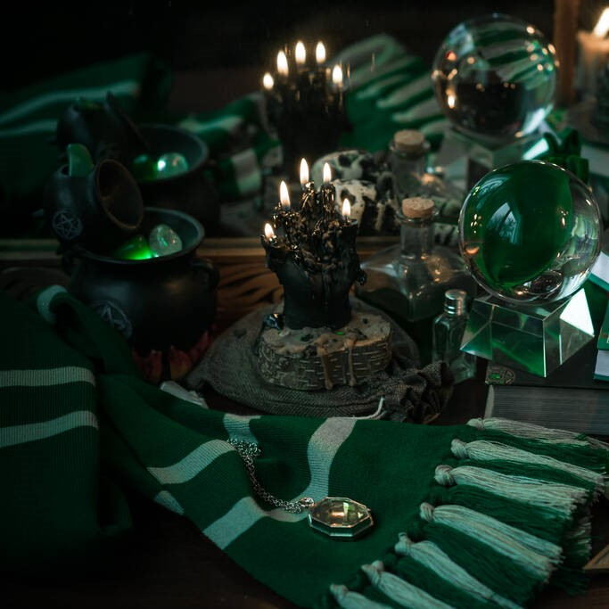
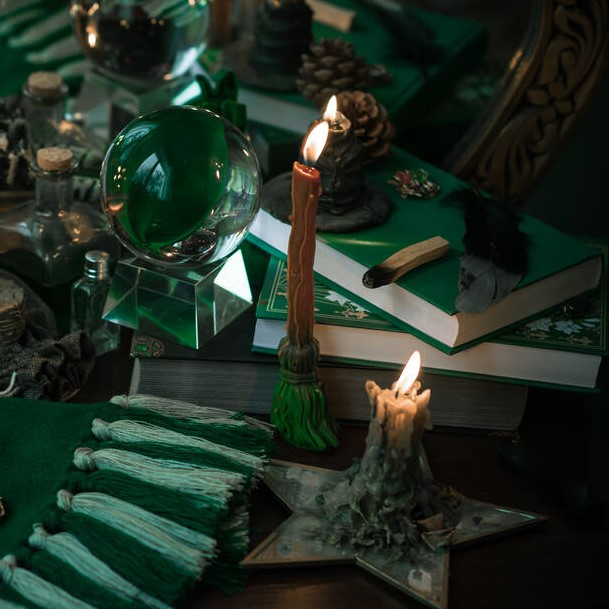

Rólunk
Üdvözöljük a Varázsdoboz okkult vegyesboltban, ahol misztikus világok ajtajai tárulnak fel Ön előtt! Vállalkozásunkat 1986-ban egy csoport misztériumot kedvelő amatőr hozta létre, akik elkötelezték magukat a mágia mellett.A kezdeményezéshez az alapítás óta eltelt évek alatt a varázslatok művelői - híres jósok, boszorkányok, orákulumok - is szép számmal csatlakoztak, akiknek közreműködésével szolgáltatásaink és programjaink minden érdeklődő számára elérhetővé teszik a spirituális utazást. A Varázsdoboz terjeszkedését a 2000-es évek elején kezdte meg, ekkor a miskolci székhely mellett Budapesten, a Városliget közelében is nyílt egy boltunk. Weboldalunk 2010-től fogad látogatókat, online vásárlásra 2016-ban nyílt először lehetőség. Ügyfeleink a Föld számos pontjáról látogatnak el hozzánk, Kanadától kezdve Laoszon át egészen Ausztráliáig. A Varázsdoboz neves partnercégei, az OK-cult csoport tagjai Szlovákiában, Németországban, Andorrában, az Amerikai Egyesült Államokban és Japánban segítik a spirituális megújulást. Legyen szó átokról, rontásról, áldásról vagy próféciáról, a Varázsdobozban mindent megtalál. Emellett szervezünk szeánszokat, ahol munkatársaink vezetésével szellemekkel léphet kapcsolatba, elsajátíthatja a vudubaba készítés művészetét, továbbá céljai elérésének megsegítésére biztonságos, kísértetszakértők által felügyelt módon köthet alkut alvilági lényekkel. Ha érdeklődik az okkult tudományok világa iránt, a Varázsdoboz közössége tárt karokkal várja személyesen, online és Facebook oldalunkon is.Önnek vagy közeli ismerősének segítségre van szüksége? Kapcsolatba lépne elhunyt rokonaival? Elege van a főnökéből, és szívesen venné, ha balszerencse érné őt? Átkot szórna rosszakaróira? Lépjen be bátran a Varázsdoboz misztikus birodalmába! Ígérjük, nem fog csalódni.
Bestsellerek
Prófécia
Pontos és fontos jóslatok a legjobb médiumoktól.

Kis rontás
Célzott alacsony hatásfokú rontás, hogy ellenségeit balszerencse sújtsa.
Áldás
Célzott áldás küldése, hogy szeretteinek a jövőben jó szerencséje legyen.
Vélemények
Kiss Aranka
Meggyógyult a kisunokám az áldástól, puszi: Aranka néni

Troll Tibor
Elátkoztam a kormányt, kíváncsian várom az eredményeket. Edit: A kormány továbbra is hatalmon, de a főnökömet kirúgták, szerintem működik.
Nostradamus
Bejövősek a próféciák, minden hónapban veszek egyet.